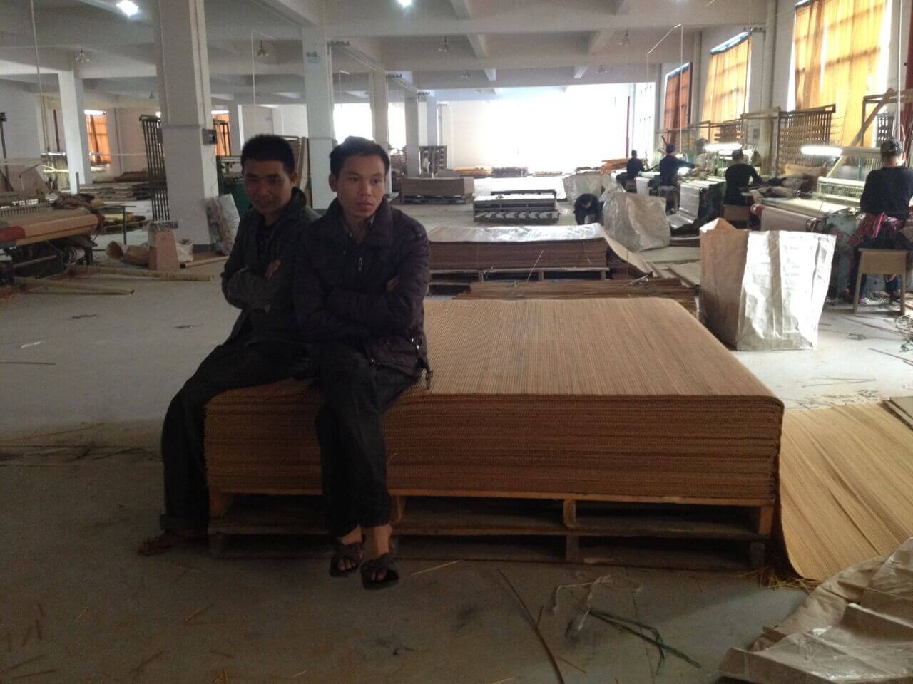
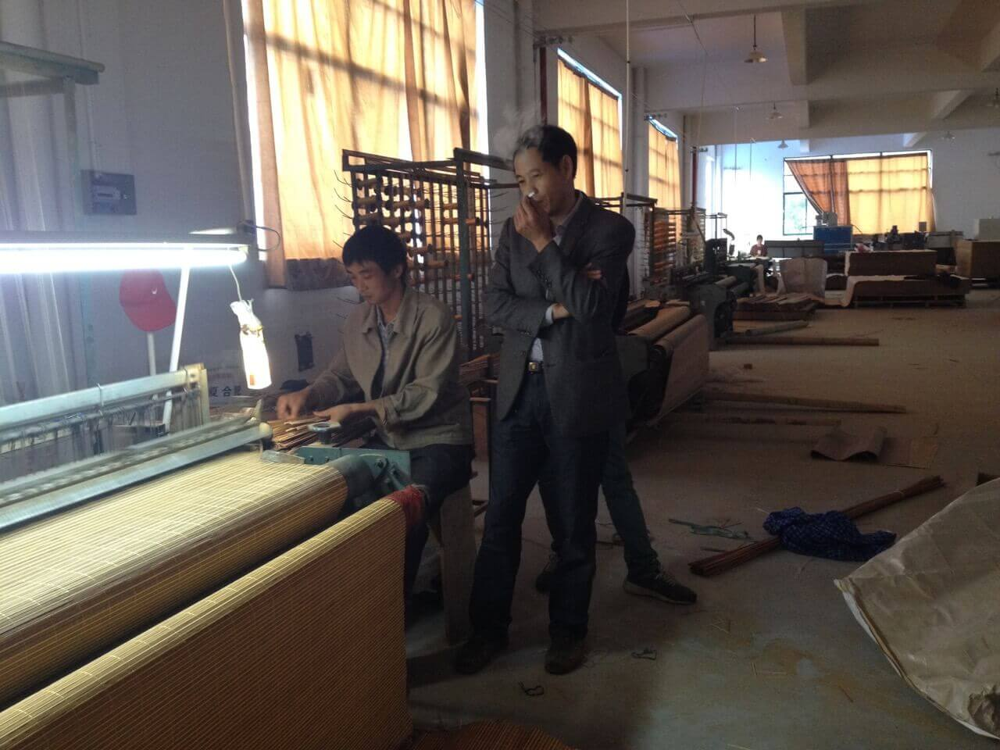
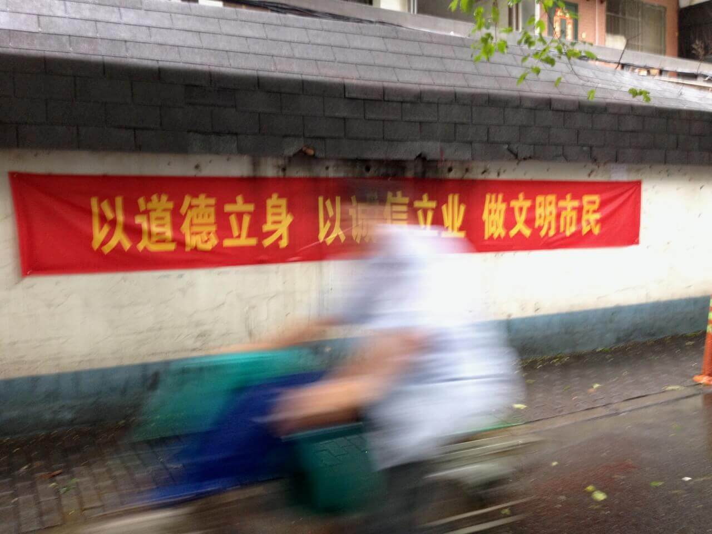
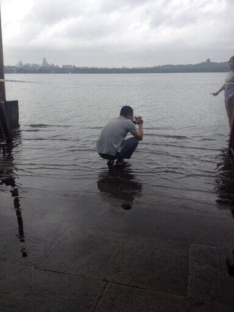
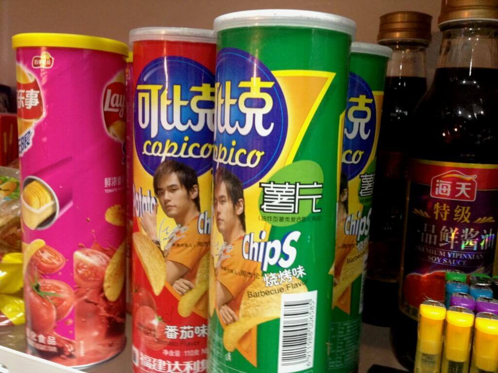

去中國出差
從小港機場出發到蕭山機場，入境中國的時候，除了網路作廢，完全沒有出國的感覺 😰

柯橋
這次出差是為了找便宜的布跟竹蓆，在柯橋停留兩天，柯橋號稱全世界最大的布市。
後來我再去台南西市場跟紐約的 Mood’s 閒逛比較，我個人覺得 Mood’s 的品項數量、精緻度是最厲害的，台南西市場也有我覺得滿精緻的布跟周邊材料。在柯橋看到很多很醜的圖案，還有布料就直接放在地上的情況。
那時候我在專賣廉價寢具的公司上班，在家樂福買到的各種編織蓆、麻將涼蓆大概都是從這種工廠出產的。
1930 年代竹、藺草還是用台灣本地的材料，現在都是從中國買半成品，運到台灣再加工車邊跟包裝起來，然後就有點像是台灣製造的了。
台灣工人的工作環境，沒有比中國工廠好，我總是覺得這樣不太對勁。
這場景看起來也很適合毒梟殺人滅口。
杭州
有去杭州閒晃一下，小巷子裡真的很多這種口號布條，像 1984 描述的街道。
西湖滿出來很驚人，而且是連外面的大馬路都淹水。美術學院周邊很美 … 但都沒拍照 😂。
最喜歡逛老百姓商店，這好像是最後住的飯店外面的小商店。用意不明的印刷物，疑似資料夾或是海報？還有很驚訝看到在台灣好像已經很少見的周杰倫。
在離開柯橋市中心要去廠商的竹席工廠路上，有經過一段滿長的山路，那段路的風景非常美，沒有任何建築物只有山跟滿滿的綠意，但因為要趕到工廠，我也不想開口問可不可以暫停一下。
中國可能就去這麼一次吧？